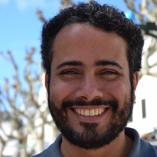
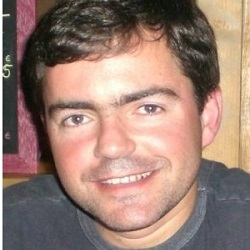

Tema: Computação Ubíqua e Pervasiva: Sistemas Móveis, Internet das Coisas, e outros
Participantes: Prof. Paulo de Figueiredo Pires (UFRJ), Prof. José Viterbo (UFF) e Wallace Ugulino (PUC-Rio).
Moderador: Prof. Carlos Alberto Campos (UNIRIO)
Este painel será realizado no dia 20/10 com horário e locais a serem definidos.

José Viterbo Filho é graduado em Engenharia Elétrica (com ênfase em Computação) pela Escola Politécnica da Universidade de São Paulo, possui Mestrado em Computação, pela Universidade Federal Fluminense, e doutorado em Informática, pela Pontifícia Universidade Católica do Rio de Janeiro. Atualmente é Professor Adjunto no Instituto de Computação da Universidade Federal Fluminense (IC/UFF), pesquisador no Laboratório de Sistemas de Tempo Real e Embarcados (LabTempo) e pesquisador colaborador no Laboratório de Documentação Ativa e Design Inteligente (ADDLabs) e no Laboratório de Gestão em Tecnologia da Informação e Comunicação (GTecCom), na mesma universidade. Além disso, é Diretor de Publicações da Sociedade Brasileira de Computação (SBC). Atua no Programa de Pós-Graduação em Computação da UFF (PPGC/UFF) onde desenvolve pesquisas na área de computação ubíqua, inferência distribuída, dados abertos e análise de dados.
Paulo de Figueiredo Pires é doutor em Engenharia de Sistemas e Computação pela COPPE/UFRJ (2002). Paulo Pires é atualmente professor associado do Departamento de Ciência da Computação da Universidade Federal do Rio de Janeiro. Desde 2002, o prof. Paulo Pires vem coordenando projetos de pesquisa e desenvolvimento em parceria com empresas como: Centro de Pesquisas da EMC Brasil, EMBRATEL, Marinha do Brasil, Secretaria de Informática do Estado do Rio de Janeiro, Ministério da Defesa, Ministério da Aeronáutica. O Prof. Paulo Pires é líder do Grupo de Pesquisa ?UbiComp: Computação Ubíqua, Sistemas Adaptativos e Sistemas Web? da UFRJ e membro do grupo de pesquisa ConSist da UFRN e do Centre for Distributed and High Performance Computing da University of Sydney (http://sydney.edu.au/distributed_computing/), onde vem desenvolvendo pesquisas relacionadas ao desenvolvimento de sistemas distribuídos complexos. Tais pesquisas têm sido financiadas por órgãos de fomento tanto no Brasil (CNPq, CAPES, RNP e FAPERJ) como no exterior (Fundación Carolina/Espanha e AusAID/Australia).

Wallace Ugulino é professor Conveniado Assistente da PUC-Rio e pesquisador em computação wearable. Doutorado concluído em Dez/2014 com tese intitulada "Wearables para Apoiar a Representação Espacial por Indivíduos Cegos". Foi reconhecido com o "Apple Distinguished Educator" (Instituto de 2015) pela sua atuação como professor de desenvolvimento para plataformas móveis (iOS). Obteve o grau de mestre (M.Sc.) em 2010 pela Universidade Federal do Estado do Rio de Janeiro (UNIRIO). Desde 2008 atua com dinâmicas educacionais em grupo (como entrevistas, role-playing, dramatização, etc.). Desde 2013 essas abordagens educacionais tem sido estendidas para o desenvolvimento de tecnologias de treinamento de mobilidade de indivíduos cegos em reabilitação. Os interesses de pesquisas incluem: tecnologias assistivas wearable, desenvolvimento para dispositivos móveis e aprendizado de máquina.

Carlos Alberto Vieira Campos possui graduação em Computação - ênfase em Sistemas de Informação pela UNIMONTES (2000), mestrado e doutorado em Engenharia de Sistemas e Computação pela COPPE/UFRJ (2003 e 2009). Desde 2009, é professor adjunto do Departamento de Informática Aplicada da Universidade Federal do Estado do Rio de Janeiro - UNIRIO, onde leciona na graduação de Sistemas de Informação e no Programa de Pós-graduação em Informática. Tem experiência na área de Ciência da Computação, principalmente em Redes de Computadores; Modelagem, Simulação e Avaliação de Sistemas Computacionais e Redes Móveis Sem Fio.